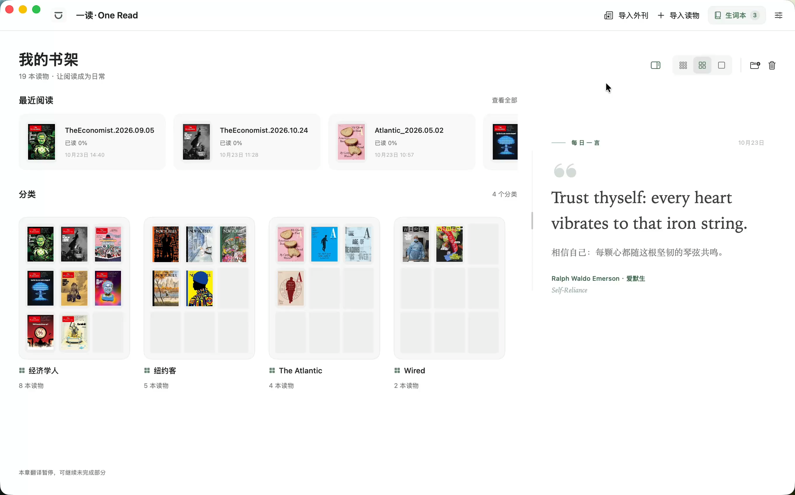

01外刊导入
把想读的世界，放进书架。
四种外刊，一个入口。选择刊物和期号，导入后即可开始阅读。
ISSUE 01 · 双语阅读特刊 EST. 2026
为 macOS 设计的英文阅读器。
双语对照 · 划词学习 · 长难句解析，让每一次阅读都留下积累。
macOS 14+ · Apple Silicon · v1.0.0

功能演示 · THE REEL
01外刊导入
四种外刊，一个入口。选择刊物和期号，导入后即可开始阅读。
02新刊推送
启动时检查仓库新刊，缓存时效内不重复打扰，由你决定是否导入。
03双语对照
仅原文、对照与仅译文三种视图；联动滚动、句子悬停对应，两栏宽度与左右顺序都可以调整。
04一键翻译
只翻译当前章节或整本读物；中途停止后，还能继续未完成的部分。
05划词翻译
单词原形、美式音标、词性与文中释义一应俱全，点击图标即可朗读。
06墨墨同步
将本地生词追加至墨墨云词本，保留云端已有词条；单向、手动、可控。
07长难句解析
把鼠标停留在句子上，按下 ⌘T：翻译、句子成分、从句与重点语法，一目了然。
FOUR WINDOWS, ONE WORLD
从时事到人文，从科技到生活。
选一个好奇的方向，开始今天的阅读。
内置四刊导入入口 · 期号与可用资源以来源仓库为准 看演示
YOUR OWN REASON TO READ
为下一场考试，也为自己的好奇心。
把阅读，变成可以持续的日常。
备考高考、四级、六级或考研，用真实语境积累词汇、拆解长难句，练习英语精读。
想提升英语阅读水平，也想通过外刊了解外面的世界。在不同的观点里，拓宽自己的视野。
寻找一款舒适的英文阅读器，导入自己的 PDF 或 EPUB，让翻译与生词积累陪伴原版阅读。
下载 Mac 版，将应用移入「应用程序」。导入本地 PDF / EPUB，或从「导入外刊」选择期刊。在设置中填写自己的 API Key，或配置已登录的本地 Agent，即可使用翻译与解析。保存的原文和译文可离线阅读。
当前安装包适用于 macOS 14 及以上的 Apple Silicon Mac。支持 DeepSeek、OpenAI、Gemini、通义千问等服务及自定义 API，也可检测本地 Agent。没有内置共享 Key，费用由所选服务决定。
应用启动时按缓存时效检查仓库新刊，由你决定是否导入；受来源仓库和网络可用性影响。在设置中配置墨墨开放 API Token 后，可将生词追加同步至云词本，分类和归档不影响同步范围。
书库、图片、译文和生词保存在本地可配置目录，密钥保存在 macOS 钥匙串。翻译会向所选服务发送文字与必要上下文。当前构建尚未经 Apple 公证；核对下载来源后，可在「系统设置 → 隐私与安全性」查看系统提供的打开选项。
支持无 DRM 的可重排 EPUB；复杂排版、脚注、精细表格可能不能完整还原。扫描件 PDF 需先做 OCR。词典释义与语法解析由所选模型生成，可能有误；考试标签来自社区参考词表。全文翻译按句调用，可能产生较多请求与费用。当前没有自动应用更新。
好的阅读体验，来自许多人的积累。
上述项目未参与或背书 OneRead。演示来自本机真实操作，文章与封面版权归各权利人。AI 释义与解析可能有误；考试标签基于社区参考词表。